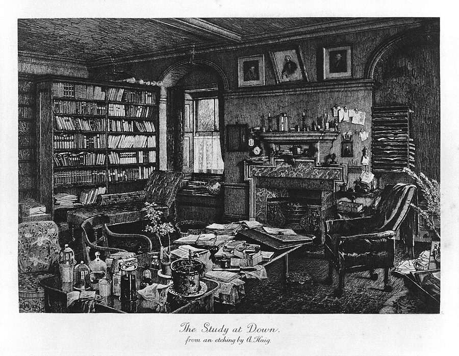
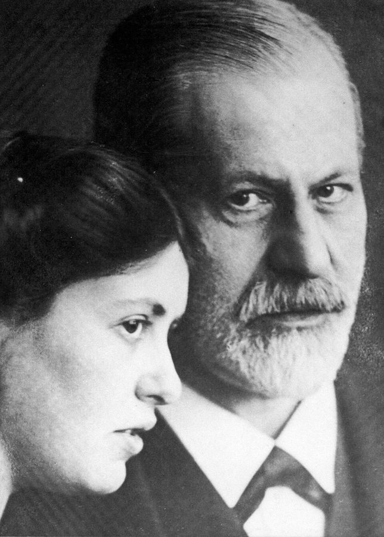

verging on humiliation
… we were always verging on humiliation.
总是离受辱只差一步
verge on 是「接近、濒临」。
尾声的前半。Phillips 把前面分头讲的两条线并到一起，先问：在没有上帝的世界里，失去还意味着什么。接着挑了两个「失去」的场面：达尔文在自传里说自己一辈子写不顺；弗洛伊德看一岁半的外孙在母亲出门时玩线轴。然后读《哀悼与忧郁》，最后转到达尔文记笔记的一条规矩和遗忘。读的时候抓两条线：失去怎样变成发明；Phillips 的「仿佛」「如果推开去」落在哪几句上。
上一页是弗洛伊德篇的末尾：死亡驱力被读成我们身上逃开一切传记的那一部分。到这里，蚯蚓和反传记两条线都讲完了，尾声把它们并起来。这一页和序章呼应的地方很多：第 1 段对理想、对「完善自己」的怀疑，接着序章第 21 段；第 15–17 段的哀悼，接着序章读《论无常》的第 35–39 段；第 18 段又搬出全书开头凯奇的那个笑话。
失去了的东西，能变成什么？
读的时候带着这几个问题。不用先找答案，读完回来对照「检查一下理解」。
§1 前六段只借了两句别人的话，没有引文本，是一大段立题：从「没有什么需要被拯救」一路问到失去在世俗世界里还有什么意义。这是全页最抽象的部分，不必逐句抠。第 7 段起才落到文本上，走两个平行的例子：达尔文的自传，弗洛伊德的线轴游戏，都是「引一段，读出失去怎样变成发明」。第 15 段引《哀悼与忧郁》，把小的失去接到亲人的死。§2 先把两个例子合成一个悖论，再从自己的死跳到记忆和遗忘，引出弗洛伊德书里的达尔文；最后一段忽然谈利润和资本，是从上一段「失去的经济学」这个说法顺下来的。
作者落在哪：Phillips 说，两人一再回到失去的场面，又多半把它写成发明的机会。他说，要是从这两个例子推开去，隐含着一个悖论：有时候我们最苦，是因为不肯受够苦。他还说，我们不只承受无常，自己也在制造遗忘。
这一页是原书尾声的第 1–2 节。原书没有小标题，只在节与节之间空一行；粗体的节名是本站起的，斜体是这一节第一段开头的几个词，在电子书里搜它就能跳过去。读完打个勾。
先把这一页用到、作者默认你懂的几个概念讲一遍。讲的是概念本身，作者拿它做什么，读原书时自己看。
这一页还用到几个别页讲过的概念：救赎、人的可完善性、哀悼、快乐原则与现实原则。
弗洛伊德在《超越快乐原则》（1920）第 2 章记下的一个游戏。一岁半的男孩把拴着线的木线轴扔进挂着帘子的小床，拖长声音喊 o-o-o-o，弗洛伊德和孩子的母亲都认为那是德语 fort（走了、不见了）；再把线轴拉出来，高兴地喊 da（在这儿）。弗洛伊德把它和母亲出门联系起来：孩子不哭不闹地让母亲走，又在游戏里自己导演「消失和回来」。程序员可以把它想成故障演练：自己动手拔掉网线、再插上，看系统怎样恢复。这个场面成了精神分析里被讨论最多的段落之一，弗洛伊德自己在同一章就给了不止一种解释（见下面「本站怎么看」）。
在这一页：第 10–14 段。Phillips 用它作失去变成发明的第二个例子，和第 7–9 段达尔文写不顺的句子并排。
弗洛伊德在《哀悼与忧郁》（1915 年写，1917 年发表）里拿它和哀悼对照。两者都是对失去的反应：痛苦、对外界失去兴趣、做什么都提不起劲。区别在于忧郁的人常常说不清失去的到底是什么，而且自我贬低、自责，好像该受惩罚的是自己。弗洛伊德的名句：哀悼时，是世界变得贫乏空虚；忧郁时，是自我本身。他的解释是，对失去的人的怨恨转回到了自己身上。今天的精神医学不再用「忧郁」作单独的诊断，它大致对应抑郁症里的一种类型；长期走不出来的哀伤，另有「延长哀伤障碍」的诊断。
在这一页：第 15–17 段引的是这篇文章，但只引哀悼一半：正常的哀悼怎样结束，自我怎样重新自由。
弗洛伊德在《日常生活的精神病理学》（1901）里的说法：忘掉一个名字、一件要办的事，往往不是偶然，而是因为它连着让人不快的东西，心里有一股力量不想记起它。弗洛伊德把它归到「压抑」（repression，把念头推出意识）的作用下，只是这里压下去的多半是日常小事，不一定深藏。打个比方，像一个缓存的淘汰策略，不按「最久没用」踢掉数据，而是优先踢掉你不喜欢的数据。今天的实验心理学证实，人能在一定程度上有意压下不想要的记忆（例如 Anderson 和 Green 2001 年在《自然》上发表的实验）；但 1990 年代关于「被压抑的童年记忆」的争论之后，弗洛伊德意义上那种深藏多年再找回的压抑，证据仍有争议。
在这一页：第 20 段原话里就有这个词：弗洛伊德说痛苦的记忆特别容易被这样忘掉，并引达尔文作证。
按在书里出现的顺序排，标题前是节号。作品只讲到读懂这一页需要的程度。
尾声的题词，Phillips 标的出处是美国哲学家杜威（John Dewey，1859–1952）的《艺术即经验》（Art as Experience，1934）：理想的价值在它带来的经验。这和第 1 段对「不可能的理想」的怀疑正好对上。第 2 段的 Ford Madox Ford（1873–1939）是英国小说家，Phillips 只借他 1924 年说过的一个词组：「称义」这个神秘的词。第 5 段的 Leslie Farber 是美国的精神科医生和心理治疗师（1981 年去世），写过论意志的随笔集，Phillips 借他一句话说：人终有一死，这件事的要求不容推辞。

达尔文 1876 年动笔写给家人看的回忆，后来又补过几段；他去世后，儿子 Francis 删去一些涉及宗教和家人的话，1887 年收进《达尔文生平与书信》出版，完整本要等到 1958 年，由孙女 Nora Barlow 整理。第 7–8 段引的那几句在自传快结束的地方：达尔文在估量自己的头脑有什么长处和短处。Phillips 拿它作第一个例子：一个人的缺陷怎样成了他的方法。

《超越快乐原则》（1920）是弗洛伊德提出死亡驱力的书，弗洛伊德篇已经读过它的第 5 章；线轴游戏在第 2 章。弗洛伊德在书里只说，他和孩子一家在一个屋檐下住了几个星期，没说孩子是谁；Phillips 写明是他的外孙，这是公认的事实。书里还有一条脚注：孩子五岁九个月时母亲去世，这时她真的「走了」，孩子却没有表现出哀伤（弗洛伊德提到，其间家里添了第二个孩子，引起他强烈的嫉妒）。第 13 段的 Moustafa Safouan 是拉康一派的精神分析家，Phillips 借他一句话：孩子玩「把东西扔远」，是在试用一种新的自由。
弗洛伊德 1915 年写、1917 年发表的短文，和序章读过的《论无常》（1915 年写）几乎同时，都在第一次世界大战期间。文章借正常的哀悼去理解病态的忧郁，「哀悼工作」（Trauerarbeit）这个词就出自这里。第 16–17 段 Phillips 引的几句，在原文里分属两处，一处在前面讲哀悼工作，一处在后面讲哀悼为什么没有「凯旋」的阶段（原文见下面「原典」）。
第 18 段的「刚刚好的苦难」是全书第一段凯奇（John Cage）的笑话，人物见序章那一页。第 19 段的 Glenda Fredman 是英国的临床心理学家和家庭治疗师，1997 年出版《死亡谈话：与儿童和家庭的对话》（Death Talk），讲怎样和孩子、家人谈死亡。Phillips 借她的说法：不忘记，本身就是在谈死亡。
弗洛伊德 1901 年发表、1904 年出书，讲口误、笔误、忘名字这些日常小错背后的动机，是他最通俗的书之一，一版一版地加例子。第 20 段引的那句称赞「伟大的达尔文」和脚注里的达尔文原话，是后来的版本才加进去的，1904 年第一版里没有。脚注里那段英文末尾署着英国精神分析家 Ernest Jones 的名字，是他提供给弗洛伊德的。达尔文那段话原本在自传里讲《物种起源》为什么能成功（原文见下面「原典」）。
Phillips 引达尔文时常常只引半句、跳着引；引弗洛伊德用的是有版权的英译。下面把这一页靠着的几段原文整段摆出来：达尔文是英文原文，弗洛伊德是德文原文（两人的原文都早已是公有领域），配本站从原文译的全译；省略处用 …。
Phillips 引到 wrong or awkward form 为止。原文紧接着还有两句，说他后来怎样对付这个毛病。
I have as much difficulty as ever in expressing myself clearly and concisely; and this difficulty has caused me a very great loss of time; but it has had the compensating advantage of forcing me to think long and intently about every sentence, and thus I have been led to see errors in reasoning and in my own observations or those of others. There seems to be a sort of fatality in my mind leading me to put at first my statement or proposition in a wrong or awkward form. Formerly I used to think about my sentences before writing them down; but for several years I have found that it saves time to scribble in a vile hand whole pages as quickly as I possibly can, contracting half the words; and then correct deliberately. Sentences thus scribbled down are often better ones than I could have written deliberately.
本站译：要把意思说得清楚简洁，我还是和从前一样吃力；这个困难让我损失了大量时间，但也有一个补偿性的好处：逼着我对每一个句子想得又久又专注，于是我得以看出推理中的错误，以及我自己或别人观察中的错误。我的头脑里似乎有一种宿命般的倾向，总让我起初把陈述或命题写成错误或别扭的样子。从前我在把句子写下来之前要先想好；但这几年我发现，用潦草的字迹尽快写下整页整页的文字、一半的词都缩写，然后再从容修改，反而省时间。这样匆匆写下的句子，常常比我从容斟酌写出来的更好。
Phillips 的引文在 led to see 前多了 often，把 statement or proposition 写成 and。他没引的两句说：达尔文后来改成先潦草快写、再慢慢改，反而省时间，快写的句子常常更好。也就是说，达尔文自己找到的出路是少花时间。
Phillips 引的英译从「孩子有一个木线轴」开始。下面多放了前面的一句：o-o-o-o 是什么意思。第一处 … 跳过两句过渡（弗洛伊德说他终于看出这是个游戏），第二处跨过一条脚注。
Dabei brachte es mit dem Ausdruck von Interesse und Befriedigung ein lautes, langgezogenes o--o--o--o hervor, das nach dem übereinstimmenden Urteil der Mutter und des Beobachters keine Interjektion war, sondern »Fort« bedeutete. … Das Kind hatte eine Holzspule, die mit einem Bindfaden umwickelt war. Es fiel ihm nie ein, sie z. B. am Boden hinter sich herzuziehen, also Wagen mit ihr zu spielen, sondern es warf die am Faden gehaltene Spule mit großem Geschick über den Rand seines verhängten Bettchens, so daß sie darin verschwand, sagte dazu sein bedeutungsvolles o--o--o--o und zog dann die Spule am Faden wieder aus dem Bett heraus, begrüßte aber deren Erscheinen jetzt mit einem freudigen »Da«. Das war also das komplette Spiel, Verschwinden und Wiederkommen, wovon man zumeist nur den ersten Akt zu sehen bekam, und dieser wurde für sich allein unermüdlich als Spiel wiederholt, obwohl die größere Lust unzweifelhaft dem zweiten Akt anhing. … Die Deutung des Spieles lag dann nahe. Es war im Zusammenhang mit der großen kulturellen Leistung des Kindes, mit dem von ihm zustande gebrachten Triebverzicht (Verzicht auf Triebbefriedigung), das Fortgehen der Mutter ohne Sträuben zu gestatten. Es entschädigte sich gleichsam dafür, indem es dasselbe Verschwinden und Wiederkommen mit den ihm erreichbaren Gegenständen selbst in Szene setzte.
本站译：扔的时候，他带着感兴趣、满足的神情，发出一声响亮的、拖长的 o-o-o-o；母亲和观察者一致判断，这不是感叹词，而是「走了」（Fort）的意思。……孩子有一个木线轴，上面缠着一根线。他从来没想过把它拖在身后的地上走，也就是拿它当小车玩；而是拽着线，很有技巧地把线轴扔过他那挂着帘子的小床的床沿，让它在床里消失，同时说出他那意味深长的 o-o-o-o，然后拉着线把线轴从床里拽出来，这时用一声快活的「在这儿」（Da）迎接它的出现。这就是完整的游戏：消失和回来。人们多半只看到第一幕，它本身就被当作一个游戏不知疲倦地重复，尽管更大的快乐无疑在第二幕。……这样，游戏的意思就不难解释了。它和孩子的一项巨大的文化成就有关，就是他做到的本能放弃（放弃本能的满足）：不加抗拒地让母亲走开。他仿佛是在为此补偿自己：用自己够得着的东西，亲手导演同样的消失和回来。
这里的「文化成就」指文明化的成就：学会克制。Phillips 引文里的省略号，德文只是一个括号。o-o-o-o 是 Fort 的说法，Phillips 的引文没有交代。补偿后面有一个 gleichsam（仿佛、可以说），Phillips 第 13 段说「补偿」也许是错的词，弗洛伊德自己也没把话说死。
Phillips 先引后面一处（第 16 段），再引前面一处（第 17 段）。下面按原文的先后排，两处之间隔着好几页。
Jede einzelne der Erinnerungen und Erwartungen, in denen die Libido an das Objekt geknüpft war, wird eingestellt, überbesetzt und an ihr die Lösung der Libido vollzogen. … Es ist merkwürdig, daß uns diese Schmerzunlust selbstverständlich erscheint. Tatsächlich wird aber das Ich nach der Vollendung der Trauerarbeit wieder frei und ungehemmt. … Die normale Trauer überwindet ja auch den Verlust des Objekts und absorbiert gleichfalls während ihres Bestandes alle Energien des Ichs. Warum stellt sich bei ihr die ökonomische Bedingung für eine Phase des Triumphes nach ihrem Ablaufe auch nicht andeutungsweise her? Ich finde es unmöglich, auf diesen Einwand kurzerhand zu antworten. Er macht uns auch darauf aufmerksam, daß wir nicht einmal sagen können, durch welche ökonomischen Mittel die Trauer ihre Aufgabe löst; aber vielleicht kann hier eine Vermutung aushelfen. An jede einzelne der Erinnerungen und Erwartungssituationen, welche die Libido an das verlorene Objekt geknüpft zeigen, bringt die Realität ihr Verdikt heran, daß das Objekt nicht mehr existiere, und das Ich, gleichsam vor die Frage gestellt, ob es dieses Schicksal teilen will, läßt sich durch die Summe der narzißtischen Befriedigungen, am Leben zu sein, bestimmen, seine Bindung an das vernichtete Objekt zu lösen.
本站译：力比多曾经系在那个对象上的每一个记忆、每一个期待，都被一一调出来，加以过度投注，在它身上完成力比多的解脱。……奇怪的是，这种痛苦的不快，在我们看来是理所当然的。可事实上，哀悼工作完成以后，自我确实又变得自由、不受抑制了。……正常的哀悼也同样克服了对象的丧失，在它持续期间也同样吸走了自我的全部能量。为什么它结束以后，连一点进入「凯旋」阶段的经济条件都不出现呢？我发现不可能三言两语地回答这个反驳。它还提醒我们：哀悼靠什么经济手段完成它的任务，我们连这一点都说不出来；不过，这里也许有一个猜测可以帮上忙。力比多与失去的对象相连的每一个记忆、每一个期待的情境，现实都会带来它的裁决：这个对象已经不存在了；而自我仿佛面对着一个问题：要不要分享这个命运？活着所带来的种种自恋的满足加在一起，让自我下定决心，解开它与那个已被消灭的对象的联系。
Phillips 第 16 段的省略号跳过的，正是弗洛伊德说「答不上来」「也许一个猜测能帮忙」的两句：哀悼怎样结束，弗洛伊德自己说只是猜测。第 17 段那句「自由、不受抑制」出自前面讲哀悼工作的地方。
Phillips 照弗洛伊德的脚注转引了中间一句。下面是原来的上下文：前一句和后一句都在讲《物种起源》。
The success of the ‘Origin’ may, I think, be attributed in large part to my having long before written two condensed sketches, and to my having finally abstracted a much larger manuscript, which was itself an abstract. By this means I was enabled to select the more striking facts and conclusions. I had, also, during many years followed a golden rule, namely, that whenever a published fact, a new observation or thought came across me, which was opposed to my general results, to make a memorandum of it without fail and at once; for I had found by experience that such facts and thoughts were far more apt to escape from the memory than favourable ones. Owing to this habit, very few objections were raised against my views which I had not at least noticed and attempted to answer.
本站译：《物种起源》的成功，我想很大程度上要归功于：我早先写过两份浓缩的纲要，最后又从一部大得多的手稿里摘出了这本书，而那部手稿本身就已经是摘要。这样我才能挑出最醒目的事实和结论。此外，多年来我一直遵守一条金科玉律：只要碰到一个已发表的事实、一个新的观察或想法和我的总体结论相反，就一定立刻把它记下来；因为经验告诉我，这样的事实和想法比有利的那些更容易从记忆里溜走。靠着这个习惯，别人对我的观点提出的反对意见，几乎没有哪一条是我没有至少注意到、并试着回答过的。
原文是 I had, also，Phillips 的引文和弗洛伊德脚注里的英文一样少了 also，可见是照弗洛伊德转引的。在达尔文这里，这条规矩是写书的办法：先把反对意见都想到。读成一条关于遗忘的心理学，是弗洛伊德的用法，Phillips 接着往下读。
你用 Kindle，单个生词长按就能查，这里只收词典帮不上的：Phillips 的悖论和警句，每个词都认识、合起来拐了弯的说法，英式口语和学术腔，典故和双关。斜体小字是原句里连续的几个词，错字照电子书原样，搜它就能跳到那里。
读不通的扫描错字和多出来的引号：
The obstacle proves to be the instrument, the loss is a calling.— §1 第 9 段。本站译：障碍原来就是工具，损失就是天职。
两个短句，同一个翻转：平常挡路的东西（障碍、损失），变成了干活的东西（工具、天职）。calling 是宗教词，Phillips 把它用在写作的笨拙上，等于说：没有上帝召唤，召唤你的可以是你的缺陷。读的时候留意，前面一句是 as though（仿佛失去时间本身就是来源）；这句话是 Phillips 对达尔文那段自述的读法，不是达尔文自己的话。
sometimes we suffer most from being unwilling to suffer enough— §2 第 18 段。本站译：有时候，我们最苦，正是因为不肯受够苦。
前半句的 suffer most 和后半句的 suffer enough 用的是同一个动词：一个是被动地受折磨，一个是肯去承受。重点在 unwilling。可以这样读：苦本身躲不掉，躲的念头让人更苦。注意它的出身：Phillips 说这是「如果从这两个报告推开去」隐含的悖论，开头还有 sometimes。他没有把它当成定律。
读完这一页的几节再看。下面是作者在这几节里的论点，由本站按论点重新组织，不按原书的顺序；每条上方是依据所在的段落，拿不准就回书里那几段再读一遍。
如果人只是生物、不是堕落的罪人，就谈不上被救赎；不被永生的愿望迷惑，无常就不会让人变小。Phillips 说两人暗示：完美的幻想藏在最朴素的理想里，任何理想都可能成了惩罚自己的借口；被不可能的理想支配，人生就过成连续的失败。剩下的问题是：没有神来担保，失去还意味着什么。
§1 第 1–2、4–6 段Phillips 说，化石、记得一半的梦，都是剩下的东西，两人的理论就是拿剩下的东西做事。他们的发现没让他们沉默；他也承认，这些故事有时像走夜路吹口哨给自己壮胆。
§1 第 3–5 段Phillips 把达尔文写不顺、多想出好句子（第 9 段）和线轴游戏并排读。他说，不是孩子仅仅选择怎样熬过母亲不在，母亲不在也给了他另一种快乐：编出游戏、用东西代表别的东西的快乐。「补偿」也许是错的词，更像巧妙的加工；孩子在学与无常相处的技艺。
§1 第 9、12–14 段弗洛伊德说，正常的哀悼能结束，是因为活着的满足最终胜过随死者而去。Phillips 认为那句乐观得不太可信，显然是弗洛伊德的愿望：在弗洛伊德的理论里，自我从来不自由。这个愿望是：正常的哀悼（Phillips 叫它「承认无常」）像线轴游戏一样，是一种解放。
§1 第 15–17 段Phillips 说，从两个例子推开去，隐含的悖论是：有时最苦，是因为不肯受够苦。日常的消失仿佛是对自己死亡的排练。达尔文发现不利的事实更容易忘；Phillips 说我们也是无常的执行者，要分得清该丢和不该丢的；记住不是让时间停下，而是让人能变。
§2 第 18–22 段合起来：尾声的前半把蚯蚓和反传记两条线并起来，落在对失去的态度上：不靠救赎，不假装没有失去，看能拿剩下的东西做什么。Phillips 在下一页把它叫作「做个好的失去者」。
读完作者的论点，再看它站不站得住。每一块摆出三样：主流怎么看，作者怎么看，本站的评论。最后一句是本站对这一页的总体判断。
主流看法：弗洛伊德在同一章里给了不止一种解释：为放弃本能满足补偿自己；把被动承受的事变成主动去做，好掌控它；向母亲报复，意思是「走吧，我不需要你」。他还说，单凭这一个例子定不下来。拉康后来把这一对声音读成孩子进入语言的一步：用符号代替不在场的东西。
作者的看法：孩子在发现自己的艺术才能，不仅仅是（怨恨地）重演被迫承受的事；「补偿」也许是错的词（第 12–13 段）。
本站的评论：Phillips 的读法不违背原文，弗洛伊德自己也写了「很有技巧」「快活」。但他挑的是几种解释里最乐观的一种，又略过了弗洛伊德真正想不通的地方：孩子单独玩「扔走」那一幕多得多，重演的是母亲离开这件不愉快的事。这怎么和快乐原则对得上，正是弗洛伊德在这一章追问、又没有定论的问题。拿这个场面说明失去能带来发明，可以；当成弗洛伊德的结论，就说过头了。
主流看法：20 世纪的哀伤辅导长期沿用「哀悼工作」的思路：面对失去，逐步撤回依恋。1989 年 Wortman 和 Silver 回顾研究，指出「必须走完哀悼过程才能恢复」这类假设缺乏证据；1996 年 Klass 等人的《持续的联结》认为，很多人健康地保持着和死者的联系，而不是切断。弗洛伊德本人 1929 年给 Binswanger 的一封常被引用的信也说，急性的悲伤会过去，人却始终无法释怀、找不到替代。
作者的看法：那句「自我又自由了」乐观得空前、也不太可信，显然是弗洛伊德的愿望：希望正常的哀悼（Phillips 叫它「承认无常」）是一种解放（第 17 段）。
本站的评论：这里 Phillips 的怀疑和今天的研究相合，眼光很准。可到了尾声后半（第 30 段），他自己又说自由联想「近似哀悼」、能放出藏着的力量，等于把这个愿望接了过来。读者不妨把「哀悼是解放」当作一种期望，不当作哀悼必然的结局；哀悼没「完成」，也不等于失败。
主流看法：心理学里有相近的发现：越想压住一个念头，它越往外冒（Wegner 等人 1987 年的「白熊实验」）；接纳与承诺疗法（ACT）的研究者把「不肯体验痛苦的念头和情绪」（经验性回避）看作许多心理困扰的共同来源（Hayes 等，1996）。
作者的看法：这是「如果从这两个报告推开去」隐含的悖论；两人没有被所受的苦压垮，最终受到了激励（第 18 段）。
本站的评论：这句话说中了日常经验，也和研究大致同向。但它的两个依据都是挺得过去的小失去：写作费时，母亲出门几小时。而达尔文自己的出路，看原文，是改成先潦草快写，省下时间。从这样的例子推到苦难和死亡，跨度很大；Phillips 自己也只说「有时候」。
本站的总体看法：这一页最可信的，是 Phillips 对两段原文语气的观察：达尔文和弗洛伊德写失去时确实不哀叹，带着兴致。要打折扣的是推广：从写作费时、孩子扔线轴推到苦难和死亡，靠的是「仿佛」和「如果推开去」；他挑的读法，又常是原文几种读法里最乐观的一种。
先在心里答，再点开。答错的那题，回书里把对应那一节再读一遍。
一种不同的注意力：被逼着把每个句子想得又久又专注，看出推理和观察里的错误。Phillips 说障碍成了工具，损失成了天职。
第一幕把线轴扔进小床、看不见了，孩子喊 o-o-o-o；第二幕拉出来，快活地喊 da（在这儿）。第一幕单独玩得多，尽管更大的快乐在第二幕。
母亲仍然是他的，他又多了一个自己发明的游戏。两样都能有，只是不一定同时。
他说这句话乐观得空前，也不太可信：在弗洛伊德的理论里，自我从来就不是自由、不受抑制的。所以这是弗洛伊德希望哀悼能带来的东西。
从达尔文和那个孩子两个例子推开去：两人都没被所受的苦压垮，反而受到激励；先接受了失去，才找到新东西，靠意志力硬来不行。他说这是推广以后隐含的悖论。
他发现这类事实比有利的事实更容易忘。弗洛伊德拿它作「不愉快是遗忘的动机」的旁证，说它反映了达尔文的科学诚实和心理洞察。
无常的执行者：生物会把痛苦、危险的东西丢掉。他说生活（或者科学）的技艺，在于分清哪些该丢、哪些不该丢。
用一句话说这一页，写给一个没读过的人。
想一想：有没有哪一次失去（计划落空、搬家、离开一份工作或一个人），后来逼出了你自己都没想到的东西？在还没找到新东西的那段日子里，你是怎么过的？
读过又忘了，从这里想起来。挑的是这一页最值得记住的场面、原文和说法，不按原书顺序；每条后面是节号，想细看就回书里那一节。全书各页的这一节都收在全书回顾。
一句话：失去是发明的机会：达尔文写不顺的句子、弗洛伊德外孙的线轴游戏都是例子；Phillips 说，有时候我们最苦，是因为不肯受够苦。
一岁半的孩子把线轴扔进小床，喊 o-o-o-o（走了）；拉出来，喊 da（在这儿）。母亲出门，他发明了一个游戏。
§1达尔文说自己一辈子写不清楚，浪费了大量时间，却被逼着把每个句子想透。Phillips 说：障碍原来就是工具。
§1孩子仍然有母亲，又多了一个游戏。Phillips 说「补偿」也许是错的词：这是把匮乏变成即兴发挥。
§1弗洛伊德说哀悼完成后自我又自由了。Phillips 说这乐观得不太可信，是弗洛伊德的愿望。
§1从两个例子推开去的悖论：有时候我们最苦，正是因为不肯受够苦。
§2达尔文发现不利的事实最容易忘，一碰到就立刻记下。弗洛伊德在书里引了这一条；Phillips 说我们也在亲手制造遗忘。
§2